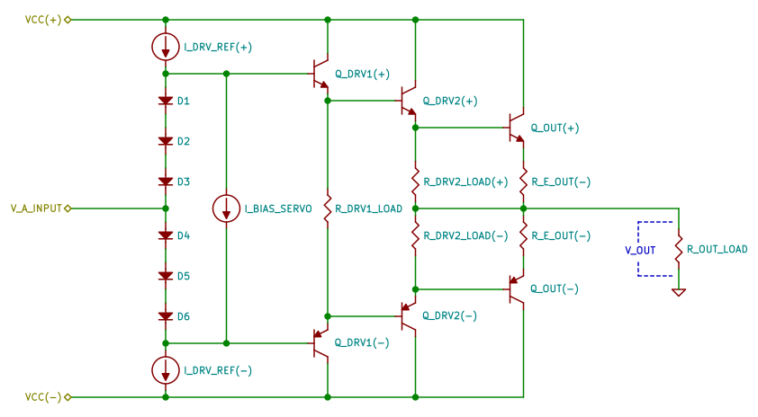

Figure 1: Generic TEF current-gain amplifier
A class-B current-gain amplifier generally purposed for amplifying the signal current without amplifying the signal amplitude. Its low output impedance allows a source with a large output impedance to drive a small load impedance. It functions as a voltage buffer. As shown in schematic of Figure 1, the impedance of Q_OUT ((+) and/or (-)) will be relatively low or lower than the output load impedance of R_OUT_LOAD. By mimics the voltage changes of V_A_INPUT that sourced by a large output impedance voltage amplifier (i.e a high output impedance VAS), a class-B current-gain amplifier yielding proper output voltage-current change to maintain the signal-amplitude with minimum loss to be loaded into and/or to control R_OUT_LOAD. In simple explanation, a class-B current-gain amplifier converts the input signal amplitude changes into the current changes or converts the input signal amplitude changes into self-output-impedance changes.
Output saturation peak is amount of peak voltage between power supply line into output line. Based schematic shown by Figure 1, it is, VCC minus by V_OUT.
Output saturation peak, V_OUT_SAT_PEAK, determined as follow:
V_OUT_SAT_PEAK=VBEA(Q_DRV1)+VBEA(Q_DRV2)+VBEA(Q_OUT)+V(R_E_OUT)+V_A_INPUT_SAT_PEAKwhere:
VBEA(Q_DRV1): active state base-emitter voltage ofQ_DRV1*, approximately at 0.7V
VBEA(Q_DRV2): active state base-emitter voltage ofQ_DRV2*, approximately at 0.7V
VBEA(Q_OUT): active state base-emitter voltage ofQ_OUT*, approximately at 0.7V
V(R_E_OUT): peak voltage ofR_E_OUT*, approximately at 1.4V
V_A_INPUT_SAT_PEAK: saturation peak ofV_A_INPUTsource amplifier, assumed as 0.9V
The safe limit of saturation peak by above formulation is at about 4.4V.
As the safe limit of saturation peak determined as at about 4.4V, the maximum safe output amplitude peak determined as follow:
V_OUT~=VCC-V_OUT_SAT_PEAK~=VCC-V_OUT_SAT_PEAKor:
V_OUT~=VCC-V_OUT_SAT_PEAK~=VCC- 4.4
The maximum amplification without output signal clipping is with collector-emitter saturation peak of Q_OUT*, VCEA(Q_OUT), at about 3V.
Q_OUT* active state optimum impedance, ZA(Q_OUT), as follow:
ZA(Q_OUT)= ((VCEA(Q_OUT)*R_OUT_LOAD) / (V_OUT + 1.4)or:
ZA(Q_OUT)= (3 *R_OUT_LOAD) / (V_OUT + 1.4)
Active state maximum emitter current of Q_OUT*, IEA(Q_OUT), determined as follow:
IEA(Q_OUT)=VCEA(Q_OUT)/ZA(Q_OUT)or:
IEA(Q_OUT)= 3 /ZA(Q_OUT)
As shown in Figure 1, Q_OUT* with Q_DRV2* combination is a Darlington pair, that have two VBE's at about 1.4V on active state. The yield of two VBE's is a premature transient, that will be summed with and interfere the signal amplitude, hence it must be mediated into special loader as R_E_OUT to prevent the emitter current overflow within Q_OUT*. The peak voltage of R_E_OUT is part of saturation peak factors.
The value of R_E_OUT determined as follow:
R_E_OUT= (1.4 *R_OUT_LOAD) /V_OUT
The 2ND-stage driver amplifier function is handled by Q_DRV2* that also functions as forward bias current source for Q_OUT*. Active state optimum lowest impedance of Q_DRV2*, ZA(Q_DRV2), will be reached upon the amplification reaching the designated maximum amplitude. In optimum active state, Q_DRV2 collector-emitter voltage will be saturate into at about 2.3V. Q_DRV2* will also have high impedance, Z(Q_DRV2), upon the amplification reaches the smaller amplitude or in idle-alike state. Each side of 2ND-stage driver has static temporary loader, R_DRV2_LOAD(+) and/or R_DRV2_LOAD(-), that also functions as reverse bias for Q_OUT(+) and/or Q_OUT(-), with 2ND-stage driver loader stationer voltage, V(R_DRV2_LOAD), approximately at 0.5V.
The active state optimum lowest impedance of Q_DRV2*, ZA(Q_DRV2), determined as follow:
ZA(Q_DRV2)= (VCC-VBEA(Q_OUT)) / (IEA(Q_OUT)/VCEA(Q_OUT))or:
ZA(Q_DRV2)= (VCC-VBEA(Q_OUT)) / (IEA(Q_OUT)/ 3)
Idle-alike state impedance of Q_DRV2*, Z(Q_DRV2), determined as follow:
Z(Q_DRV2)= (ZA(Q_DRV2)* (VCC/V(R_DRV2_LOAD))or:
Z(Q_DRV2)= (ZA(Q_DRV2)* (VCC/ 0.5)
The temporary loader of 2ND-stage driver (reverse bias for Q_OUT*), R_DRV2_LOAD*, determined as follow:
R_DRV2_LOAD=(Z(Q_DRV2)*V(R_DRV2_LOAD)) / (VCC-V(R_DRV2_LOAD))
Active state Q_DRV2* emitter-current, IEA(Q_DRV2), determined as follow:
IEA(Q_DRV2)=VCEA(Q_DRV2)/ZA(Q_DRV2)or:
IEA(Q_DRV2)= 2.3 /ZA(Q_DRV2)
Idle-alike state Q_DRV2* emitter-current, IE(Q_DRV2), determined as follow:
IE(Q_DRV2)=VCC/ (Z(Q_DRV2)+R_DRV2_LOAD)
As shown in Figure 1, 1ST-stage driver amplifier designed as a single transistor EF current-gain amplifier with side-to-side internal loader as R_DRV1_LOAD. Q_DRV1* will have optimum lowest impedance in active state, ZA(Q_DRV1), upon the amplification reaches the designated maximum amplitude. Q_DRV1* will also have high impedance, Z(Q_DRV1), upon the amplification reaches the smaller amplitude or in idle-alike state. R_DRV2_LOAD also functions as side-to-side static reverse bias for both Q_DRV2(+) and Q_DRV2(-) of 2ND-stage driver with stationer voltage, V(R_DRV2_LOAD), approximately at 1V.
Q_DRV1* active state optimum lowest impedance, ZA(Q_DRV1), determined as follow:
ZA(Q_DRV1)= (V_OUT_SAT_PEAK-VBEA(Q_DRV2)) / (IEA(Q_DRV2)/V_OUT_SAT_PEAK)or:
ZA(Q_DRV1)= (4.4 - 0.7) / (IEA(Q_DRV2)/ 4.4)
Idle-alike state impedance of Q_DRV1*, ZA(Q_DRV1), determined as follow:
ZA(Q_DRV1)= (VCC-VBEA(Q_DRV2)) / (IE(Q_DRV2)/VCEA(Q_DRV2))or:
ZA(Q_DRV1)= (VCC- 0.7) / (IE(Q_DRV2)/ 2.3)
The internal loader, R_DRV1_LOAD, determined as follow: